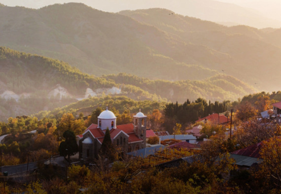

Лимассол
Айя-Напа
Ларнака
Лимассол
Никосия
Пафос
+27
o
C
Афиша
Культура
Развлечения
Кухня
Места
О Кипре
Вопросы
О проекте
Культура
Монастырь Святого Георгия Аламану - одна из крупнейших женских обителей на Кипре
175
13
Кухня
Незабываемые Кипрские гамбургеры
Частный выбор местных жителей, заказывающих его на правздниках, торжествах, юбилеях и других радостных событиях.
Развлечения
Один из лучших пляжей "Ladies Mile"
Обширный набор пляжных развлечений - от аквааэробики до моторизованных видов водного спорта, с индивидуальной программой
Культура
Археологический музей Лимассола
Экспонаты музея относятся к историческим от неолита до временя Римской империи
Кухня
Лучшие сладости северного Лимассола
Кафе находится в Старом городе, недалеко от конечной станции многих автобусов и торговой улицы с магазинами анаксартесиас
Развлечения
Куда отправиться всей семьей
Небольшой грот в тени деревьев, с вершины которого стекает вода - это место купания Афродиты

Культура
Руины католического монастыря
Руины католического монастыря построенного крестоносцами в начале XIII века на высоте 220м над уровнем моря недалеко от Кирении
Кухня
Здесь всегла прекрасная музыка
Кафе находится в Старом городе, недалеко от конечной станции многих автобусов и торговой улицы с магазинами анаксартесиас
Культура
Древний античный город Аматус
Обширный набор пляжных развлечений - от аквааэробики до моторизованных видов водного спорта, с индивидуальной программой